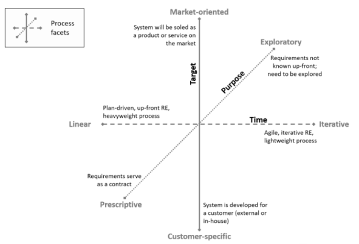
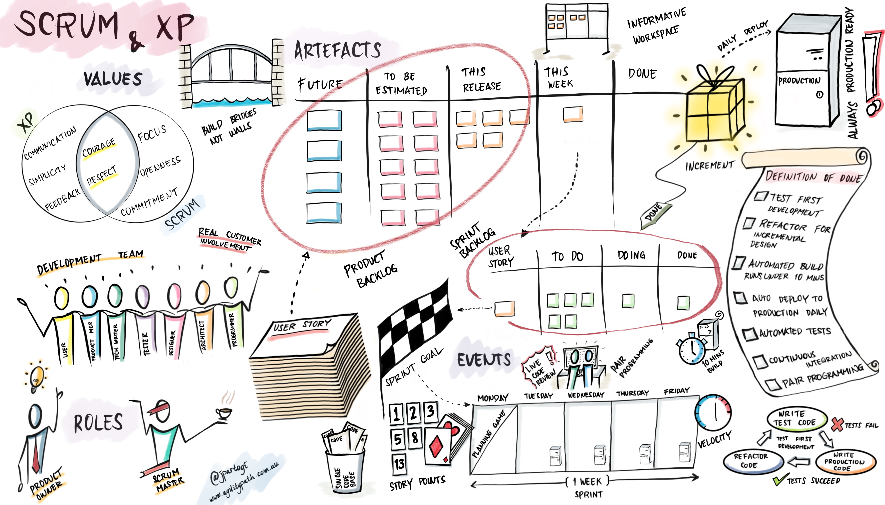

Processo de Desenvolvimento de Software
Gupta (2008)[1] propõe que a escolha da abordagem de desenvolvimento de software deve ser baseada em critérios como as necessidades e requisitos do projeto, o ambiente e cultura organizacional em que o projeto será executado, o tamanho e complexidade do projeto, o risco envolvido, o orçamento e o prazo para conclusão do projeto. Ele enfatiza que a escolha da abordagem não é uma decisão única e estática, mas sim um processo contínuo que deve ser revisado e adaptado ao longo do tempo para garantir o sucesso do projeto.
Características dos Requisitos
| Requisitos | Cascata | Prototipação | Iterativo e Incremental | Evolutivo | Spiral | RAD |
|---|---|---|---|---|---|---|
| Os requisitos são facilmente compreensíveis e definidos? (SIM) | Sim | Não | Não | Não | Não | Sim |
| Mudamos os requisitos com bastante frequência? (NÃO) | Sim | Não | Sim | Sim | Não | Sim |
| Podemos mudar os requisitos no início do ciclo? (SIM) | Sim | Não | Sim | Sim | Não | Sim |
| Os requisitos indicam um sistema complexo a ser construído? (NÃO) | Sim | Não | Não | Não | Não | Sim |
Status da Equipe de Desenvolvimento
| Requisitos | Cascata | Prototipação | Iterativo e Incremental | Evolutivo | Spiral | RAD |
|---|---|---|---|---|---|---|
| Menos experiência em projetos similares(SIM) | Não | Sim | Não | Não | Sim | Não |
| Menos conhecimento de domínio (novidade na tecnologia) (NÃO) | Não | Sim | Não | Não | Não | Sim |
| Menos experiência nas ferramentas a serem utilizadas (SIM) | Não | Sim | Sim | Sim | Não | Sim |
| Disponibilidade de treinamento, se necessário(SIM) | Não | Não | Sim | Sim | Não | Sim |
Envolvimento do Usuário
| Requisitos | Cascata | Prototipação | Iterativo e Incremental | Evolutivo | Spiral | RAD |
|---|---|---|---|---|---|---|
| Envolvimento do usuário em todas as fases (NÃO) | Sim | Não | Sim | Sim | Sim | Não |
| Participação limitada do usuário(SIM) | Sim | Não | Sim | Sim | Sim | Não |
| O usuário não tem experiência prévia de participação em projeto semelhante(NÃO) | Não | Sim | Sim | Sim | Sim | Não |
| Os usuários são especialistas no domínio do problema (NÃO) | Sim | Não | Não | Sim | Sim | Não |
Tipo de Projeto e Risco Associado
| Requisitos | Cascata | Prototipação | Iterativo e Incremental | Evolutivo | Spiral | RAD |
|---|---|---|---|---|---|---|
| O projeto é aprimoramento do sistema existente (NÃO) | Sim | Sim | Não | Não | Sim | Não |
| O financiamento é estável para o projeto(SIM) | Sim | Sim | Não | Não | Não | Sim |
| Altos requisitos de confiabilidade(SIM) | Não | Não | Sim | Sim | Sim | Não |
| Cronograma do projeto apertado(SIM) | Não | Sim | Sim | Sim | Sim | Sim |
| Uso de componentes reutilizáveis(NÃO) | Sim | Não | Sim | Sim | Não | Não |
| Os recursos (tempo, dinheiro, pessoas etc.) são escassos?(SIM) | Não | Sim | Não | Não | Sim | Não |
Facetas
As Facetas do processo de Engenharia de Requisitos são encontradas no IREB (2022)[2], e serve para poder identificar quais são as características dos requisitos do projeto, na figura 1, observa-se a estrutura do diagrama e quais pontos devem ser levados em consideração.

Figura 1 - Facetas do processo de ER (Fonte: International Requirements Engineering Board, 2022)
Através de uma análise cuidadosa, a equipe chegou na conclusão que as características do projeto se encaixam na seguinte descrição
Market-Oriented
O nosso software é desenvolvido como um produto ou serviço para um mercado, com base nos seguintes critérios de seleção: - O nosso produto tem como alvo nutricionistas; - Os requisitos são especificados pelo fornecedor(Grupo); - O fornecedor tem que adivinhar/estimar/eliminar as necessidades dos clientes/usuários previstos;
Iterativo
- Requisitos em evolução - não conhecidos antecipadamente;
- Curtos ciclos de feedback estabelecidos para mitigar o risco;
- Longa duração do projeto;
- A capacidade de alterar os requisitos facilmente é importante;
Explorátorio
Apenas objetivos conhecidos, os requisitos concretos devem ser explorados. - Partes interessadas fortemente envolvidas, feedback contínuo; - Prazos e custos restringem os requisitos; - Priorizar e negociar os requisitos a serem implementados.
Quanto ao processo de Engenharia de Requisitos, foi optado por orientado a produto, iterativo exploratório e orientado a mercado. O motivo da escolha é o objetivo de garantir que o produto ofereça um melhor valor de mercado e experiencia de usuário, que são aspectos importantes para o produto proposto. A forma incremental do desenvolvimento também ajuda em criar um produto mais flexível para mudanças baseadas no feedback dos clientes, além de permitir uma maior continuidade no desenvolvimento do produto e permitir maior flexibilidade no desenvolvimento e nos requisitos.
ScrumXP
Levando em consideração o resultado do GUPTA e as características das Facetas do Processo de Engenharia de Requisitos que se enquadram no projeto e comentários do professor na apresentação, foi decidido que nosso grupo vai usar o ScrumXP para trabalhar ao longo do desenvolvimento.
O ScrumXP é um método de equipe ágil usado por Agile Release Trains (ARTs) para planejar, executar, retrospectar e entregar valor ao cliente em um curto espaço de tempo. Ele combina o poder do Scrum com as práticas do Extreme Programming (XP). Muitas equipes usam o SAFe ScrumXP como seu principal processo de equipe ágil.
As equipes ágeis que aplicam o SAFe ScrumXP seguem uma cadência regular de eventos para alcançar um objetivo comum, entregando valor à empresa e aos seus clientes. As equipes têm autoridade e autonomia para planejar, executar e gerenciar seu trabalho, tomar decisões dentro de seu escopo e se adaptar às condições em constante mudança da melhor maneira que acharem adequada. As equipes determinam como fazem seu trabalho e o escopo a que podem se comprometer dentro do prazo. Elas criam e refinam itens do backlog, geralmente expressos como histórias com critérios de aceitação, definindo e comprometendo-se com metas de iteração. Em seguida, elas constroem, testam e implantam a nova funcionalidade e garantem a qualidade incorporada para cada incremento da solução.

Figura 2 - SAFe ScrumXP (Fonte: scrum.org)
Processo de Engenharia de Requisitos
Elicitação e Descoberta
- Entrevistas com cliente, questionários com cliente e prototipagem rápida(baixa fidelidade) com o cliente, observação mais na frente, revisão de documentos
- Ferramentas: Microsoft Teams, Discord, Google Forms e Google Docs
Análise e Consenso
- levantamento inicial de requisitos: participação de todas as partes interessadas através das entrevistas e dos questionários coletados.
- documentação de requisitos: os requisitos levantados deram documentados através do backlog na estrutura do SAFE e lista de Requisitos.
- análise de requisitos: para verificar se os requisitos levantados inicialmente atendem às necessidades, se estão alinhados com o projeto e se não são contraditórios.
- priorização de requisitos: priorização através da análise de critérios como complexidade e valor de negócio; pode-se utilizar a técnica MosCow juntamente à esta análise.
- validação: a partir de checklist e walkthroughs entre a equipe e representantes do público-alvo.
- documentação de mudanças: será criado um histórico de versão dos requisitos caso haja necessidade de mudança em algum requisito
- obtenção de consenso: será obtido através das entrevistas e feedback.
- validação técnica: protótipo de alta fidelidade (Figma) com o representante-cliente, github (declarar a visão do produto), reuniões entre integrantes
- Ferramentas: Trello, Figma, Discord, Microsoft Teams, Github, Google Forms e LucidChart
Declaração
- Serão definidos todos os requisitos funcionais e não funcionais nessa etapa
- Requisitos funcionais: listagem e backlog na estrutura do SAFE.
- Requisitos não funcionais: serão listados e documentados.
- Requisitos de interface: apresentação de prototipagem simples em papel para descrever o sistema
- Restrições e limitações: serão listadas e documentadas, todas as partes interessadas serão avisadas
- Métodos de validação: através de questionários e disponibilização das documentações para obtermos opiniões sobre o andamento dessa etapa
- Aprovação: após coletadas as opniões a partir dos questionários on-line
- Ferramentas: Trello, Discord, Microsoft Teams, Github, Google Forms e LucidChart
Representação
- documentação e protótipos de alta e baixa fidelidade (figma e papel)
- Ferramentas: Figma e Papel
Verificação e Validação
- checklists, ferramentas de teste e análise estática, e entrevistas com o cliente e observação do cliente usando funções do produto
- Ferramentas: Trello, Figma, Discord, Microsoft Teams, Github e Google Forms
Organização e Atualização
- github, reuniões entre integrantes, ferramentas de fluxo (trello)
- Ferramentas: Github e Trello
Referências Bibliográficas
- GUPTA, S. Managing Iterative Software Development Projects. Auerbach Publications, 2008.
- INTERNATIONAL REQUIREMENTS ENGINEERING BOARD. Handbook IREB CPRE Foundation Level, Version 1.1.0, september 2022. [S.l.]: International Requirements Engineering Board, 2022.
| Versão | Data | Descrição | Autor | Revisor |
|---|---|---|---|---|
| 0.1 | 24/10/2023 | Criação do documento | Eric | Guilherme |
| 0.2 | 25/10/2023 | Revisando o arquivo conforme o feedback do professor | Guilherme | Luana |
| 0.3 | 26/10/2023 | Revisando o arquivo conforme a missão 2 | Luana | Eric |